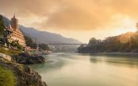
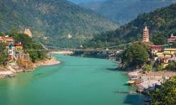
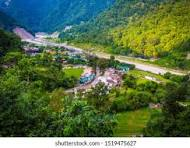

Exploring Rishikesh in the Himalayas

Welcome to Rishikesh, an enchanting destination nestled in the Uttrakhand. where the
serene banks of the Ganges River invite you to unwind and connect with nature.Immerse yourself in
the spiritual vibe of Rishikesh, known as the
'Yoga Capital of the World', where ashrams and meditation centers abound.Embark on a journey to
Rishikesh to
rejuvenate your
mind and body amidst the tranquil surroundings of this spiritual haven. it's a place where spirituality,
adventure, culture, and nature converge. Whether you seek inner peace, thrilling adventures, cultural
experiences, or simply a retreat into nature, Rishikesh has something to offer every traveler.
Embrace the spirit of this enchanting town and let it leave an indelible mark on your heart and
soul.Rishikesh has long been a spiritual hub, attracting seekers from around the world. It is home to
numerous ashrams and yoga centers, where visitors can immerse themselves in meditation, yoga, and
spiritual
practices. The town's serene environment,
HimalayasNestled in the foothills of the majestic Himalayas, Rishikesh is a tranquil town
renowned for its
spiritual significance and breathtaking natural beauty. Situated along the banks of the sacred Ganges
River, this serene destination attracts
travelers from around the globe seeking solace and adventure amidst its picturesque landscapes.Rishikesh
is also known for its holistic healing practices. Ayurvedic treatments, wellness retreats, and spa
therapies are widely available, offering rejuvenation for the mind, body, and soul. Visitors can indulge
in
these ancient practices to enhance their well-being and achieve a harmonious balance.The natural beauty
of Rishikesh is truly captivating.
views The town offers panoramic views of the Himalayas, and the serene
waters of the Ganges add to its charm. Whether it’s the early morning mist rising from the river or the
golden hues of the sunset reflecting off the water,
Rishikesh provides a picturesque setting that leaves a lasting impression on every traveler
Flying Fox Flying Fox: Zip-lining across the Ganges provides a bird’s eye view of the stunning
landscape, combining
adventure with scenic beauty.
cascading waterfalls, and occasional glimpses of snow-capped peaks in the distance.Rishikesh is also
known
for its holistic healing practices,offering a range of wellness retreats and Ayurvedic
treatments.
Spiritual Haven

Explore Rishikesh Ram and Lakshman Jhula: These iconic suspension bridges span the Ganges River
and offer
stunning views of the river and surrounding hills. They are also important pilgrimage sites.Triveni
Ghat: This sacred ghat is where the Ganges, Yamuna, and Saraswati rivers are believed to meet.
It’s a popular spot for bathing and evening aarti ceremonies. Kunjapuri Temple: Situated at an altitude
of 1,645 meters, this temple offers panoramic views of the
snow-capped Himalayas and the Doon
Valley. It’s a popular destination for sunrise and sunset treks.
Uttrakhand:Rishikesh is often referred to as the "Yoga Capital of the World", offering a
sanctuary for spiritual
seekers and yoga enthusiasts alike. The town is dotted with ashrams, where visitors can immerse
themselves in meditation, yoga sessions, and spiritual teachings. The tranquil atmosphere, coupled with
the soothing
sounds of the flowing Ganges, creates an ideal environment for self-reflection and rejuvenation.there
are several Devi (Goddess) temples in and around Rishikesh that are significant pilgrimage sites and
attract many visitors. Here are some notable ones:
1. Kunjapuri Devi Temple 1. Kunjapuri Devi Temple
Located about 25 kilometers from Rishikesh at an altitude of 1,645 meters, Kunjapuri Devi Temple is one
of the most revered temples dedicated to Goddess Durga. The temple offers breathtaking views of the
Himalayan peaks and the Doon Valley. It's especially popular for sunrise treks, providing a spiritually
uplifting experience along with stunning natural scenery.
Chandreshwar Mahadev Temple Chandreshwar Mahadev Temple
Situated near Rishikesh, this temple is dedicated to both Lord Shiva and Goddess Chandreshwari. It is
located at Chandrabadni, about 33 kilometers from Devaprayag. According to legend, it is one of the
places where parts of Goddess Sati's body fell, making it a significant Shakti Peetha.
Spiritual Sanctuar

Situated at the foothills of the Himalayas, Rishikesh serves as a gateway to exploring this majestic
mountain range. From scenic hikes to breathtaking viewpoints
, the Himalayan landscapes offer unparalleled natural beauty and adventure.Neelkanth Mahadev Temple
Located about 32 kilometers from Rishikesh, Neelkanth Mahadev Temple is dedicated to Lord Shiva. It is
situated at an altitude of 1,330 meters and is surrounded by dense forests.
The pilgrimage site and offers, breathtaking views of the surrounding valleys and
hillsRishikesh, located in the foothills of the
Himalayas, experiences a diverse climate that can be broadly categorized into three main seasons:
summer, monsoon, and winter. Here's a detailed overview of the climate throughout the year:
mansoon.
Temperature: The temperature during summer ranges from 20°C to 40°C (68°F to 104°F).
Climate: Summers in Rishikesh are hot, especially in May and June. However, the evenings are relatively
cooler due to the proximity to the Himalayas.
Activities: This is a popular time for white-water rafting, trekking, and other adventure sports.
Despite the heat, tourists flock to Rishikesh for its spiritual and adventure offerings.
Monsoon (July to September)
Temperature: The temperature during the monsoon season ranges from 22°C to 35°C (72°F to 95°F).
Climate: Rishikesh experiences moderate to heavy rainfall during the monsoon. The region becomes lush
and green, but the heavy rains can lead to landslides and swollen rivers.
Activities: This is not the best time for adventure sports like rafting due to the high water levels.
However, the rain-washed landscapes offer a different kind of serene beauty, attracting those who enjoy
the monsoon charm.
Winter (October to February)
Temperature: The temperature during winter ranges from 5°C to 20°C (41°F to 68°F).
Climate: Winters in Rishikesh are cool and pleasant. December and January are the coldest months, with
temperatures occasionally dropping to 5°C (41°F).
Activities: This is an ideal time for sightseeing, yoga, and meditation retreats. The weather is
comfortable for outdoor activities, and the clear skies offer stunning views of the surrounding hills.
Best Time to Visit
Ideal Period: The best time to visit Rishikesh is during the autumn (September to November) and spring
(February to April) seasons when the weather is pleasant and conducive to outdoor activities and
exploration.
"Yoga Capital of the World"

Rishikesh is renowned as the "Yoga Capital of the World" and holds immense spiritual significance. It's
a
place where visitors can delve into yoga, meditation,
and spiritual practices amidst serene surroundings and sacred riverbanksTriveni Ghat
Triveni Ghat is a sacred bathing ghat where the Ganges, Yamuna, and Saraswati rivers are believed to
meet.
Triveni Ghat
Pilgrims come here to take a holy dip, and it’s also a popular spot for evening Ganga Aarti,
similar to the one at Parmarth Niketan, but more crowded and lively.Rishikesh is renowned for its
meditation centers and ashrams that offer a serene environment for spiritual growth and inner peace.
Here are some of the most popular meditation centers in Rishikesh1. Parmarth Niketan Ashram
Location: On the banks of the Ganges River.
Rishikesh offers a glimpse into traditional Indian customs and practices
Spiritual Significance
Description: One of the largest ashrams in Rishikesh, offering yoga, meditation, and spiritual retreats.
The daily Ganga Aarti is a highlight.
Activities: Yoga and meditation classes, spiritual lectures, satsangs, and Ayurvedic treatments.
Explore various aspects of Hindu spirituality
Sivananda Ashram (Divine Life Society)
Location: Near Ram Jhula.
Description: Founded by Swami Sivananda, this ashram offers comprehensive yoga and meditation courses.
Activities: Daily yoga classes, meditation sessions, spiritual discourses, and Vedanta studies.
3. Omkarananda Ganga Sadan
Location: Near Ram Jhula.
Description: A well-known center for Iyengar Yoga, offering structured courses and workshops.
Activities: Iyengar Yoga classes, meditation sessions, and spiritual programs.
4. Phool Chatti Ashram
Location: On the Neelkanth Road, near Laxman Jhula.
Description: Known for its seven-day yoga and meditation program, focusing on practical and theoretical
aspects of spiritual life.